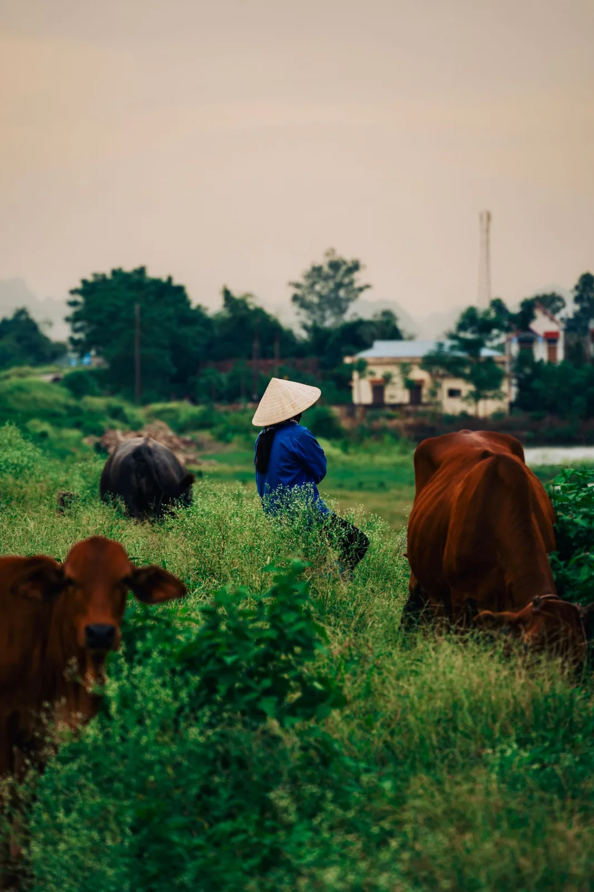
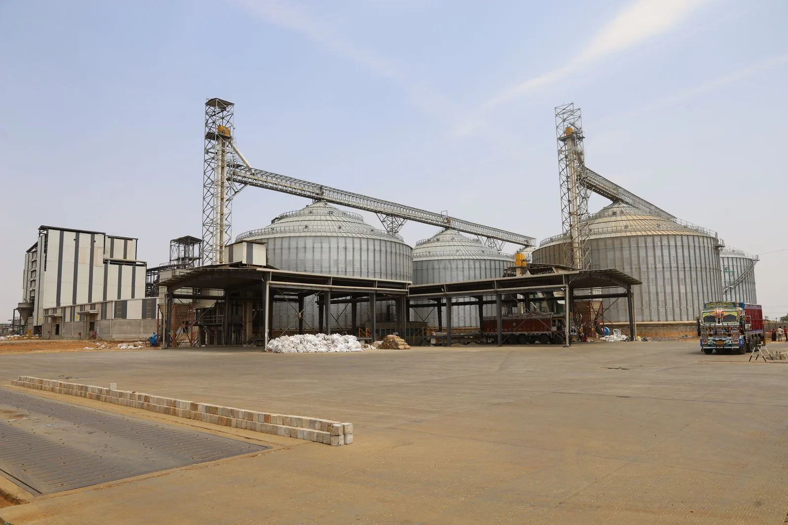
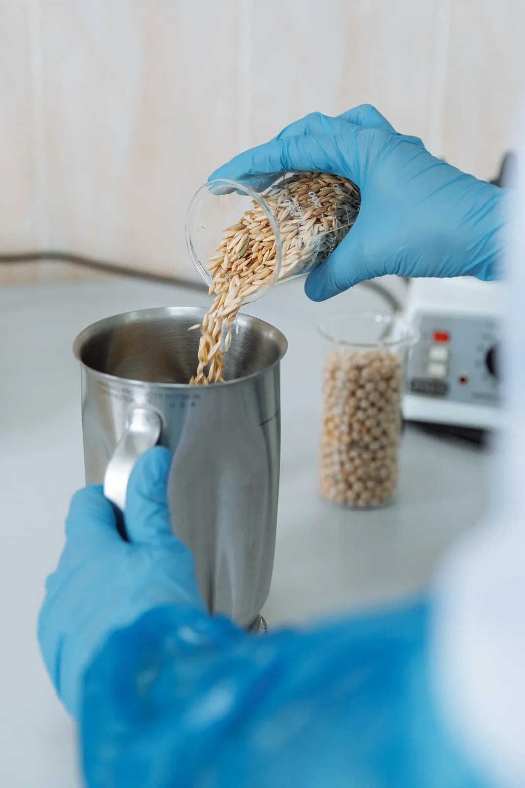

Gần người chăn nuôi miền Tây
FarmPlus là doanh nghiệp chăn nuôi gia súc, gia cầm và cung ứng thức ăn chăn nuôi tại Đồng bằng sông Cửu Long. Chúng tôi hiểu rằng người chăn nuôi miền Tây cần nhiều hơn một bao thức ăn tốt: họ cần con giống khỏe, kỹ thuật phù hợp với điều kiện sông nước và đầu ra ổn định.
Vì vậy, FarmPlus xây dựng chuỗi chăn nuôi khép kín Feed – Farm – Food. Thức ăn được sản xuất tại nhà máy đạt chuẩn, theo công thức và tiêu chuẩn cơ sở do FarmPlus công bố; vật nuôi được chăm sóc tại hệ thống 30 trang trại; thực phẩm đến tay người tiêu dùng cùng thông tin nguồn gốc rõ ràng.
Trụ sở tại Vĩnh Long, đội ngũ kỹ sư và hơn 30 đối tác phân phối giúp FarmPlus luôn ở gần người chăn nuôi – để cùng nhau nâng tầm chăn nuôi Việt Nam.
“Nâng tầm chăn nuôi Việt Nam bắt đầu từ việc giúp mỗi trang trại nuôi tốt hơn hôm qua.”

Tầm nhìn – Sứ mệnh – Giá trị cốt lõi
Tầm nhìn
Trở thành chuỗi chăn nuôi khép kín đáng tin cậy hàng đầu Đồng bằng sông Cửu Long, góp phần nâng tầm chăn nuôi Việt Nam.
Sứ mệnh
Cung cấp thức ăn chăn nuôi chất lượng, con giống khỏe và thực phẩm sạch; đồng hành cùng người chăn nuôi bằng kỹ thuật và sự tận tâm.
Giá trị cốt lõi
Năm giá trị định hướng mọi hoạt động của FarmPlus:
- Chất lượngMỗi sản phẩm được kiểm soát và công bố tiêu chuẩn rõ ràng.
- Minh bạchThông tin sản phẩm, nguồn gốc và giá cả rõ ràng với khách hàng, đối tác.
- Đồng hànhKỹ sư FarmPlus sẵn sàng hỗ trợ người chăn nuôi tận trại.
- Đổi mớiKhông ngừng cải tiến kỹ thuật và quy trình chăn nuôi.
- Bền vữngChăn nuôi an toàn sinh học, có trách nhiệm với môi trường và cộng đồng.
Feed – Farm – Food
Từ nhà máy thức ăn, qua đội xe bồn và hệ thống trang trại, đến thực phẩm sạch trên bàn ăn – mỗi chặng đều được kiểm soát.
Từng bước xây dựng chuỗi khép kín
Những nền tảng FarmPlus đã xây dựng để đồng hành cùng người chăn nuôi Đồng bằng sông Cửu Long.
Hệ thống trang trại
Phát triển 30 trang trại gà, vịt, heo với quy mô hơn 500.000 vật nuôi.
Thức ăn chăn nuôi
Sản xuất tại nhà máy ở KCN Hòa Bình, Tây Ninh.
Công bố tiêu chuẩn
Công bố tiêu chuẩn cơ sở cho các dòng thức ăn gà, heo, vịt, bò sữa, dê.
Giao hàng tận trại
Đội xe bồn FarmPlus đưa thức ăn đến tận trang trại khách hàng.
Mạng lưới phân phối
Hơn 30 đối tác phân phối, tiếp tục mở rộng khắp miền Tây.
Trang trại & nhà máy

Nhà máy sản xuất – KCN Hòa Bình, Tây NinhNhà máy sản xuất
Thức ăn chăn nuôi FarmPlus được sản xuất tại nhà máy đạt chuẩn, theo công thức và tiêu chuẩn cơ sở do FarmPlus công bố.
- Lô A3 Đường số 6, KCN Hòa Bình, Xã Thủ Thừa, Tỉnh Tây Ninh
- Thức ăn hỗn hợp dạng viên, bao 25 kg
- Các dòng sản phẩm cho gà, heo, vịt – ngan, bò sữa, dê
Hệ thống 30 trang trại
- Chăn nuôi gà trắng, gà màu, vịt thịt và heo thịt
- Quy mô hơn 500.000 vật nuôi
- Quy trình an toàn sinh học, kỹ sư giám sát định kỳ

Văn phòng Vĩnh Long
- 44E Trần Đại Nghĩa, P. Phước Hậu, Vĩnh Long
- Kinh doanh, kỹ thuật và chăm sóc đại lý
Mỗi sản phẩm một số công bố
Tất cả thức ăn chăn nuôi FarmPlus được công bố theo tiêu chuẩn cơ sở (TCCS). Số công bố, số lô và hạn sử dụng in rõ trên từng bao.


Đồng hành cùng kỹ sư tương lai
FarmPlus trao học bổng cho sinh viên ngành Chăn nuôi – Thú y có hoàn cảnh khó khăn, học tập tốt tại Trường Đại học Cần Thơ.
Con người FarmPlus
Đội ngũ trẻ, am hiểu kỹ thuật và gắn bó với người chăn nuôi.
Dinh dưỡng
Kỹ sư xây dựng công thức thức ăn cho từng loài, từng giai đoạn.
Thú y
Bác sĩ thú y theo dõi sức khỏe đàn và quy trình phòng bệnh.
Kỹ thuật trại
Đội kỹ thuật vận hành và hỗ trợ trực tiếp tại 30 trang trại.
Kinh doanh
Chăm sóc hơn 30 đối tác phân phối và khách hàng trang trại.